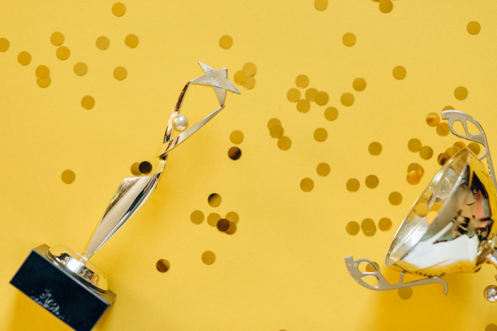

Are you considering investing in silver through a self-directed IRA but feeling overwhelmed by the choices? Choosing the right custodian is crucial for a smooth and secure process. At Fused Distribution, we stock a wide variety of silver bullion and understand the complexities involved. This guide will compare the top silver IRA custodians in 2026, helping you make an informed decision. We recommend researching each option thoroughly to find the best fit for your individual needs.

What to Know About Silver IRAs
A self-directed IRA allows you to invest in assets beyond traditional stocks and bonds, like precious metals. This is a powerful tool for diversifying your retirement portfolio and protecting your wealth. However, it’s not as simple as opening a standard IRA. You’ll need a custodian specifically licensed to handle these types of investments.
Here’s what you need to understand:

- IRS Regulations: The IRS has strict rules for self-directed IRAs. You must follow specific procedures for buying, storing, and insuring your silver. These rules include limitations on the types of dealers you can use, requirements for physical possession of the metal, and restrictions on lending or borrowing against the IRA.
- Custodial Fees: Custodians charge fees for their services, which can vary significantly. Factor these fees into your investment strategy. Expect annual maintenance fees, transaction fees, and storage fees. These fees are designed to cover the custodian’s operational costs, including account administration, compliance, and security.
- Storage Options: Custodians typically offer segregated storage in secure vaults. You’ll need to understand the storage options available and their associated costs. Storage options range from institutional vaults to private, secure facilities, each offering varying levels of security and insurance coverage.
- Account Minimums: Many custodians require a minimum initial investment to open an account. These minimums can range from a few thousand dollars to tens of thousands. This minimum is often intended to cover the initial storage fees and setup costs.
- Due Diligence: Thoroughly research any custodian before entrusting them with your retirement savings. Check their licensing, security measures, and customer reviews. It’s also advisable to verify their compliance with IRS regulations and their adherence to industry proven methods.
How to Get Started with a Silver IRA
- Determine Your Investment Goals: What are you hoping to achieve with your silver investment? Are you seeking long-term wealth preservation, inflation protection, or a hedge against economic uncertainty? Understanding your goals will help you choose the right silver bullion and custodian.
- Choose a Custodian: Research and compare different custodians based on fees, services, and reputation. We’ll look at our top recommendations below.
- Open an Account: Complete the application process with your chosen custodian. Be prepared to provide personal information and documentation, including proof of identity and residency.
- Fund Your Account: Transfer funds from your existing retirement account or other bank account into your new IRA. This transfer is subject to IRS rules and timelines.
- Purchase Silver: Work with your custodian to purchase physical silver bullion, such as American Eagle coins or silver bars.
- Secure Storage: Your silver will be stored in a secure, segregated vault.
- Ongoing Management: Regularly review your account and ensure your silver is properly insured.
Top Silver IRA Custodians Compared - 2026
Here’s a breakdown of the leading silver IRA custodians, focusing on key features and considerations for 2026:
1. Patriot Gold IRA: Patriot Gold IRA consistently ranks high for its user-friendly platform and competitive fees. They offer a streamlined process for opening an account and purchasing silver. They charge an annual account maintenance fee of $99, plus transaction fees, which are typically based on the size of the trade. As of late 2025, they reported an average customer satisfaction rating of 4.7 out of 5 stars, reflecting a strong commitment to customer service.
2. AJS IRA: AJS IRA is known for its extensive selection of silver products and its commitment to customer service. They offer a wide range of coins and bars, as well as educational resources for investors. AJS IRA charges an annual account maintenance fee of $149, plus transaction fees. They also offer free delivery on silver purchases, a valuable service for investors. Their customer service responsiveness is consistently praised by clients.
3. Gold American IRA: Gold American IRA specializes in precious metals and offers a comprehensive suite of services for investors. They provide secure storage, professional guidance, and a reliable online platform. Gold American IRA’s annual account maintenance fee is $179, plus transaction fees. They are particularly strong on providing educational content, including articles and webinars on investing in precious metals. They have a high volume of transactions, demonstrating strong market activity and a busy operation.
4. Discovery IRA: Discovery IRA is a popular choice for beginners due to its simple and straightforward process. They offer a limited selection of silver products, but their low fees and easy-to-use platform make them a good option for those just starting out. Discovery IRA charges an annual account maintenance fee of $79, plus transaction fees. Their average account opening time is under 72 hours, a significant advantage for investors seeking a quick and efficient process.
5. Heritage Silver IRA: Heritage Silver IRA focuses on providing a premium service for serious silver investors. They offer personalized support, secure storage, and a wide range of investment options. Heritage Silver IRA’s annual account maintenance fee is $249, plus transaction fees. They are known for their expertise and attention to detail, catering to investors with more complex needs. They maintain a 99.99% security record for stored assets, demonstrating a strong commitment to protecting client investments.
6. United Western Wealth: United Western Wealth distinguishes itself through its focus on building long-term relationships and providing personalized investment advice. They offer a wide range of silver products and storage options, alongside broader wealth management services. Their annual account maintenance fee is $169, plus transaction fees. They are known for their proactive communication and dedication to client success.
7. Sovereign IRA: Sovereign IRA emphasizes transparency and a no-pressure sales approach. They offer a straightforward process and competitive pricing. Their annual account maintenance fee is $129, plus transaction fees. They are often favored by investors who appreciate a less aggressive sales strategy.
Comparing Custodian Fees - 2026
Let’s look at a comparative breakdown of annual fees (as of late 2025 estimates): For more on this, see Can You Put Physical Silver In An IRA.
- Patriot Gold IRA: $99
- AJS IRA: $149
- Gold American IRA: $179
- Discovery IRA: $79
- Heritage Silver IRA: $249
- United Western Wealth: $169
- Sovereign IRA: $129
As you can see, there’s a significant range in annual fees. Discovery IRA offers the lowest fees, while Heritage Silver IRA charges the most. Consider your budget and the services offered when making your decision. It’s crucial to remember that lower fees don’t always equate to better service; carefully evaluate the overall value proposition.
Storage Options and Security
All of the custodians listed above offer secure storage in reputable vaults. Here's a brief overview of the common storage options:
- Segregated Storage: Your silver is stored separately from other investors’ assets, providing an extra layer of security.
- Vault Locations: Custodians typically store silver in vaults located in Delaware, Texas, or Florida, which offer favorable tax laws. These states have specific regulations regarding precious metal storage that are beneficial for investors.
- Insurance: Custodians insure your silver against theft, damage, and loss. Coverage levels vary, so be sure to understand the terms of your insurance policy. The average insurance coverage per ounce of silver is approximately $100,000, although this can vary based on the custodian and the specific policy.
Common Mistakes to Avoid
- Not Doing Your Research: Don’t rush into choosing a custodian. Take the time to thoroughly research your options and compare fees, services, and reputation.
- Ignoring Fees: Fees can eat into your returns over time. Be sure to understand all the fees associated with your IRA, including annual maintenance fees, transaction fees, and storage fees.
- Not Understanding IRS Rules: The IRS has strict rules for self-directed IRAs. Make sure you understand these rules and follow them carefully. Failure to comply with IRS regulations can result in penalties and loss of your investment.
- Insufficient Insurance: Ensure your silver is adequately insured against theft, damage, and loss.
- Lack of Liquidity: Remember that silver IRAs are not easily accessible. Consider your liquidity needs before investing.
Looking Ahead to 2026
Looking ahead to 2026, we anticipate continued growth in the silver IRA market, driven by inflation concerns and a desire for alternative investments. Increased awareness of silver as a hedge against economic uncertainty is likely to contribute to this growth. Also, technological advancements in online platforms and custodial services are expected to simplify the investment process and improve the user experience.
Next Steps: Taking Action
Ready to take the next step in your silver IRA journey? Here’s what you should do:
- Compare Custodians: Review the information provided here and compare the top silver IRA custodians.
- Contact Custodians: Reach out to the custodians you’re considering and ask questions about their services and fees.
- Start Your Application: Once you’ve chosen a custodian, begin the application process.
- Invest in Silver: Purchase silver bullion and deposit it into your IRA.
At Fused Distribution, we’re committed to providing you with the highest quality silver and the resources you need to succeed. We recommend starting with a small investment and gradually increasing your holdings as you become more comfortable with the process. Don’t hesitate to contact us with any questions.
Related
- Silver IRA vs Physical Silver At Home Which Is Better
- Can You Put Physical Silver In An IRA
- Self-Directed IRA Approved Silver Coins and Bars List
Read next: Silver IRA vs Physical Silver At Home Which Is Better